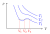

Die van-der-Waals-Gleichung ist eine Modifizierung des idealen Gas Gesetzes
$$p\cdot V = n\cdot R\cdot T$$
um statt idealen auch reale Gase beschreiben zu können.
Dabei werden Druck und Volumen zu sogenannten effektiven (=modifizierten) Größen.
$$p_\text{eff}\cdot V_\text{eff} = n\cdot R\cdot T$$
Die Korrektur des Volumens besteht darin, dass das Eigenvolumen der Teilchen
berücksichtigt wird. Dafür wird das von den Teilchen belegte Volumen vom
Gesamtvolumen abgezogen
$$V_\text{eff} = V - n\cdot b$$
mit Stoffmenge $n$ und Eigenvolumen $b$.
Der effektive Druck ist
$$p_\text{eff} = p + a\frac{n^2}{V^2}$$
mit einer gaspezifischen Materialkonstante $a$.
$$\mathbf{\Big(p + a\frac{n^2}{V^2}\Big)(V - n\cdot b)} = \mathbf{n\cdot R\cdot T}$$
Maxwell-Konstruktion
Betrachtet man einige, mit der van-der-Waals-Gleichung errechnete, isotherme
Kurven in einem p-V-Diagramm, so fällt auf, dass die Gleichung für kleine Temperaturen
unphysikalisch wird.

Das Problem besteht darin, dass die Kurve bei einer Vergrößerung
des Volumens eine Druckabnahme beschreibt
$$\Big(\frac{\partial p}{\partial V}\Big)_T > 0$$
was den realen Messungen widerspricht.
In diesem Bereich wird die Kurve durch eine Horizontale ersetzt, die so gewählt ist,
dass die Fläche ober- und unterhalb gleichgroß ist (Maxwellkonstruktion).
Kritische Punkte
Die mathematische Bedingung für den kritischen Punkt ist
$$\Big(\frac{\partial p}{\partial V}\Big)_{T_\text{c}} = \Big(\frac{\partial^2 p}{\partial V^2}\Big)_{T_\text{c}} = 0$$
Formt man die van-der-Waals-Gleichung nach p um und errechnet die Ableitungen aus
den Bedingungen, ergibt sich ein Gleichungssystem (bestehend aus p, p' und p'').
Lösen ergibt dann die kritischen Größen
\begin{align*}
V_c &= 3n\cdot b \\
p_c &= \frac{a}{27b^2} \\
RT_c &= \frac{8a}{27b}
\end{align*}
Das Verhältnis der Größen zur entsprechenden kritischen Größe ist definiert als
die reduzierte Größe
\begin{align*}
\pi &= \frac{p}{p_c} \\
\tau &= \frac{T}{T_c} \\
\phi &= \frac{V}{V_c}
\end{align*}
Eingesetzt in die van-der-Waals-Gleichung ergibt sich das sogenannte Gesetz der
korrespondierenden Zustände
$$\Big(\pi + \frac{3}{\phi^2}\Big)(3\phi - 1) = 8\tau$$